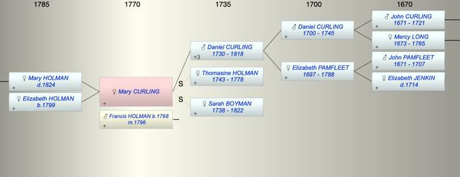

| [Index] |
| Mary CURLING |
|  |
| b. at St Lawrence |
| m. 15 Aug 1796 Francis HOLMAN (1768 - ) at St Laurence |
| Parents: |
| Daniel CURLING (1730 - 1818) |
| Children (2): |
| Mary Ann HOLMAN ( - 1824) |
| Elizabeth HOLMAN (1799 - ) |
| Grandchildren (3): |
| Elizabeth PETLEY (1821 - ), John PETLEY (1822 - ), James PETLEY (1824 - 1824) |
| Events in Mary CURLING's life | |||||
| Date | Age | Event | Place | Notes | Src |
| Mary CURLING was born | St Lawrence | ||||
| 01 Mar 1778 | Death of step mother Thomasine HOLMAN (aged 35) | St Laurence | Note 1 | ||
| 15 Aug 1796 | Married Francis HOLMAN (aged 28) | St Laurence | Note 2 | ||
| 05 Jan 1799 | Birth of daughter Elizabeth HOLMAN | Coulsdon, Surrey | bap Coulsdon 6 Jan 1799 ex FS | ||
| 01 Aug 1818 | Death of father Daniel CURLING (aged 88) | St Laurence | Note 3 | ||
| 1822 | Death of step mother Sarah BOYMAN (aged 84) | St Lawrence | posssible buried St L aged 84 | ||
| 1824 | Death of daughter Mary Ann HOLMAN | Ramsgate | Note 4 | ||
| Personal Notes: |
| Cotton states that Daniel and Thomasin had a daughter Mary who married Francis Holman and this is supported by Daniel's will that refers to his granddaughters Mary Ann and Elizabeth Holman. |
| Created on a Mac™ using iFamily for Mac™ on 8 Oct 2023 |